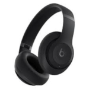

Fones de ouvido Bluetooth Beats Studio Pro
A plataforma acústica personalizada da Beats oferece som rico e imersivo tanto para ouvir música quanto para atender chamadas. Áudio sem perdas via USB-C mais três perfis de som integrados distintos para aprimorar sua experiência de audição Ouça o que você quiser com dois modos de escuta dinâmicos: Cancelamento ativo de ruído (ANC) totalmente adaptativo e modo Ambiente Compatibilidade aprimorada com emparelhamento com um toque e um conjunto robusto de recursos nativos da Apple e do Android Áudio espacial personalizado com rastreamento dinâmico de cabeça coloca você no centro de uma experiência de escuta imersiva em 360 graus